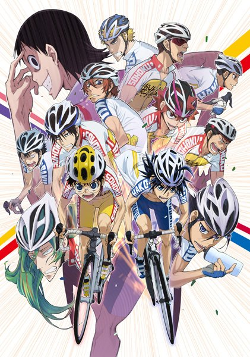
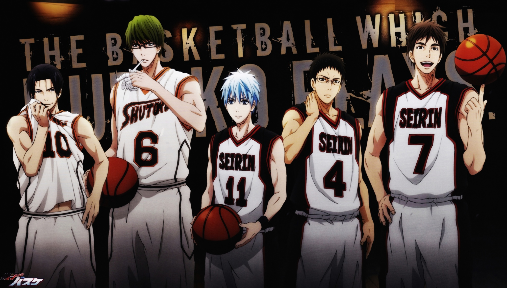
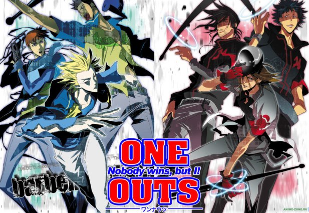
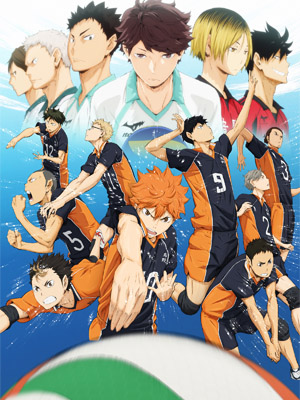

5: Yowamushi pedaru
Ratings : 🌟 8.0
English Name : Yowamushi Pedal
Genre :ComedySportsDramaShounen
Seasons : 1
Episodes : 38
Air-Date : 8-July-2013
Watch-Time : 24 min.(Per Ep.)
Synopsis:
Sakamichi Onoda is a cheerful otaku looking to join his new school's anime club, eager to finally make some friends. Unfortunately, the club has been disbanded and he takes it upon himself to revive it by finding students who are willing to join. Without much luck, Onoda decides to make a round trip to Akihabara on his old, bulky city bicycle, a weekly 90-kilometer ride he has been completing since fourth grade.
This is when he meets fellow first year student, Shunsuke Imaizumi, a determined cyclist who is using the school's steep incline for practice. Surprised by Onoda's ability to climb the hill with his specific type of bicycle, Imaizumi challenges him to a race, with the proposition of joining the anime club should Onoda win. And thus begins the young boy's first foray into the world of high school bicycle racing!
4: Slam Dunk

Ratings : 🌟 8.5
English Name : Slam Dunk
Genre : ComedyDramaSportsSchoolShounen
Seasons : 1
Episodes : 101
Air-Date : 16-October-1993
Watch-Time : 24 min.(Per Ep.)
Synopsis:
Hanamichi Sakuragi, infamous for his temper, massive height, and fire-red hair, enrolls in Shohoku High, hoping to finally get a girlfriend and break his record of being rejected 50 consecutive times in middle school. His notoriety precedes him, however, leading to him being avoided by most students. Soon, after certain events, Hanamichi is left with two unwavering thoughts: "I hate basketball," and "I desperately need a girlfriend."
One day, a girl named Haruko Akagi approaches him without any knowledge of his troublemaking ways and asks him if he likes basketball. Hanamichi immediately falls head over heels in love with her, blurting out a fervent affirmative. She then leads him to the gymnasium, where she asks him if he can do a slam dunk. In an attempt to impress Haruko, he makes the leap, but overshoots, instead slamming his head straight into the blackboard. When Haruko informs the basketball team's captain of Hanamichi's near-inhuman physical capabilities, he slowly finds himself drawn into the camaraderie and competition of the sport he had previously held resentment for.
3: Kuroko no Basket
Ratings : 🌟 8.2
English Name : Kuroko's Basketball
Genre : ComedySchoolSportsShounen
Seasons : 3
Episodes : 25(Per Season)
Air-Date : 8-April-2012
Watch-Time : 24 min.(Per Ep.)
Synopsis:
Teikou Junior High School's basketball team is crowned champion three years in a row thanks to five outstanding players who, with their breathtaking and unique skills, leave opponents in despair and fans in admiration. However, after graduating, these teammates, known as "The Generation of Miracles", go their separate ways and now consider each other as rivals.
At Seirin High School, two newly recruited freshmen prove that they are not ordinary basketball players: Taiga Kagami, a promising player returning from the US, and Tetsuya Kuroko, a seemingly ordinary student whose lack of presence allows him to move around unnoticed. Although Kuroko is neither athletic nor able to score any points, he was a member of Teikou's basketball team, where he played as the "Phantom Sixth Man," who easily passed the ball and assisted his teammates.
Kuroko no Basket follows the journey of Seirin's players as they attempt to become the best Japanese high school team by winning the Interhigh Championship. To reach their goal, they have to cross pathways with several powerful teams, some of which have one of the five players with godlike abilities, whom Kuroko and Taiga make a pact to defeat.
2: One Outs
Ratings : 🌟 8.3
English Name : One Outs
Genre : Sports/span>PsychologicalSeinen
Seasons : 1
Episodes : 25
Air-Date : 8-October-2008
Watch-Time : 24 min.(Per Ep.)
Synopsis:
Toua Tokuchi is an athlete by profession, but a reckless gambler at heart. On the streets of Okinawa, he uses nothing but his wits and a "fastball" peaking at a mere 134 kmph to somehow achieve 499 wins in the game of "One Outs," a simplified version of baseball between the pitcher and one batter. Amazed by Toua's unique prowess on the mound, veteran slugger Hiromichi Kojima artfully scouts the pitcher for his long unsuccessful team, the Saikyou Saitama Lycaons. Kojima desperately hopes Toua will lead them to the championship; however, Tsuneo Saikawa, the mercenary owner of the Lycaons, sees the vastly talented pitcher as a threat to the income generated by the team. Rising to the challenge of swaying the owner, Toua suggests a one-of-a-kind "One Outs" contract: every out Toua pitches will earn him five million yen, but with every run he gives up, he will lose fifty million yen.
Adapted from the manga by Shinobu Kaitani of Liar Game fame, One Outs documents the intense psychological battles between Toua and those around him. With millions of yen at stake, can a pitcher who has done nothing but gamble in a head-to-head imitation of baseball finally lead a real baseball team to victory?
1: Haikyuu!!
Ratings : 🌟 8.6
English Name : Haikyu!!
Genre : ComedySportsDramaSchoolShounen
Seasons : 3
Episodes : 25(Per Season)
Air-Date : 6-April-2014
Watch-Time : 24 min.(Per Ep.)
Synopsis:
Inspired after watching a volleyball ace nicknamed "Little Giant" in action, small-statured Shouyou Hinata revives the volleyball club at his middle school. The newly-formed team even makes it to a tournament; however, their first match turns out to be their last when they are brutally squashed by the "King of the Court," Tobio Kageyama. Hinata vows to surpass Kageyama, and so after graduating from middle school, he joins Karasuno High School's volleyball team—only to find that his sworn rival, Kageyama, is now his teammate.
Thanks to his short height, Hinata struggles to find his role on the team, even with his superior jumping power. Surprisingly, Kageyama has his own problems that only Hinata can help with, and learning to work together appears to be the only way for the team to be successful. Based on Haruichi Furudate's popular shounen manga of the same name, Haikyuu!! is an exhilarating and emotional sports comedy following two determined athletes as they attempt to patch a heated rivalry in order to make their high school volleyball team the best in Japan.